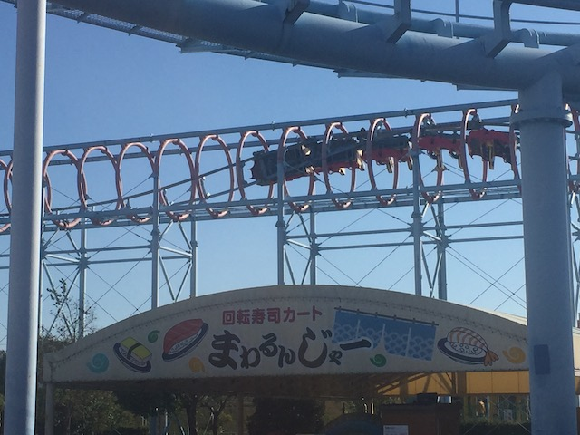
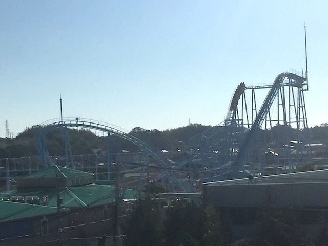
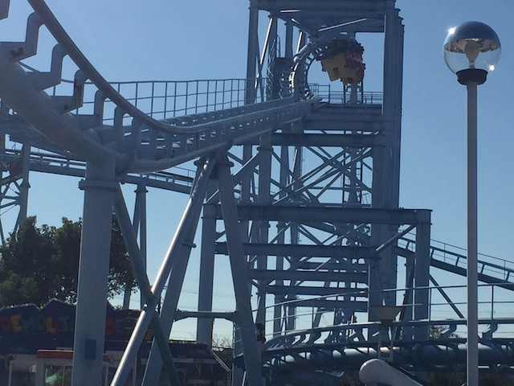
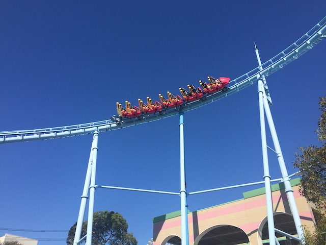
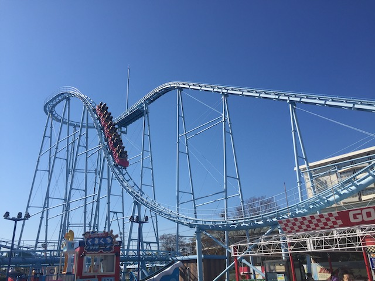

| |
Mega Coaster Review

We're here at Hamanako Pal Pal where we're going to be riding their star attraction, Mega Coaster. Now some coaster enthusiasts may be cringing when looking at this ride. Because if you look at it, it looks like a cross between Manhattan Express and the long-defunct Viper @ SFGAdv. Now I never got a chance to ride that as that was demolished LONG before I ever made it to Six Flags Great Adventure. However, even if all the claims of it being rough as hell were exxagerated (I'm guessing they weren't), the coaster that replaced it was El Toro, which as you know is the best coaster ever. So yeah. Good riddance Viper. And yeah, Manhattan Express SUCKS!!! TOTAL PEICE OF SH*T!!! So a combination of those two rides, yeah. I can see why most enthusiasts would have low expectations. But people were shocked that the ride was actually fun, and that always intrigued me. So much so that I made Hamanako Pal Pal a priority and hit it when I finally did my Japan Trip. And yeah. It's a lot of fun and not painful at all. So let's stop talking and start riding! I know it has the same evil restraints that Manhurtin' Express has. You know the ones. The ones that karate chop your neck! I feel myself massaging my neck just looking at these restraints. You know, Manhattan Express wouldn't be NEARLY as bad if it just had better restraints. Hell, there's a decent chance it'd be fun with just lap bars or even vest restraints! So how the hell is this ride good if it has literally the worst possible restraints a coaster could have!? Shut up and just get in! Pull down the lap bar, cautiously pull down the neckchoppers, and away we go! We roll around a turn and begin climbing up the lifthill. It's a very slow lifthill, though that's not a huge deal. It does provide you with a nice view of Hamanako Pal Pal as well as of Uchiura Bay. We eventually reach the top, go around a turn, and head down the first drop. OH CRAP!!! We head down that first drop, and wind up gaining a lot of speed. So far, this is pretty fun. We then head into a turn around. Oh crap! Brace for neck-chopping! But....all the claims are right! This is smooth as glass. Not a single bit of headbanging or neckbanging. So yeah. We're having a lot of fun right now. We then go through some straight track leading to Inversion #1. The Twist 'N' Dive. Oh crap! The Manhattan Express part. We then twist upsidedown, go through a teeny bit of upsidedown straight track, which provides us with some hang time, and then we drop back down right side up. Now to be fair, this element is the one fun part of Manhurtin Express. But there's no karate-chopping S bend here, and we can enjoy this as well as the rest of the ride. =) We then head around a curve, again smooth as glass. No neckbanging. =) We head up a small curved hill, and BOOM!!! Now we're into inversion #2. The Inline Twist. This is the part of the ride that is supposed to be the Viper Part. Reminds me more of one of the inline twists on an Ultra Twister, but that's fine. Because this is a lot of fun. Yeah. The rings around you as you flip upsidedown are kind of funky, but that just makes things a lot more fun. We then head down a small curved drop. No headbanging, right before rising up and heading into a downward helix. Yeah. This helix isn't anything special or particuarly intense. But at least it doesn't hurt, and we're still having fun. We then rise up, and glide right into the brake run. And yeah. This was a lot of fun. Yeah. It's far from the best ride ever. But it's still a fun little coaster, and is SO MUCH better than the coasters its so similar to. If you only want to focus on Japan's greatest coasters, then this isn't gonna make that. But if you want to get on a unique fun coaster, then this is something to hit. And if you're at Hamanako Pal Pal, you gotta hit this ride. It's easily the best ride in the park.
7/10
Location: Hamanako Pal Pal
Opened: 1997
Built by: Togo
Last Ridden: November 10, 2018
Here's my raw footge video of Mega Coaster
Mega Coaster Photos










Home
|